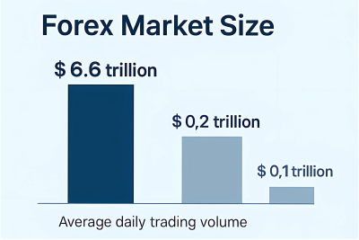
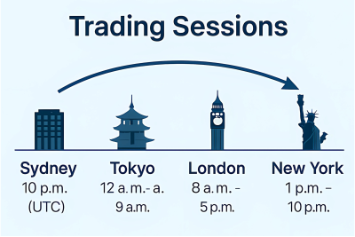
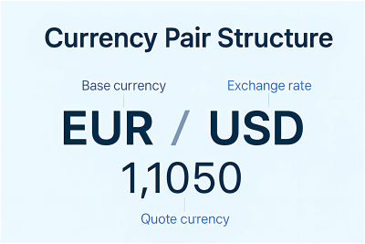
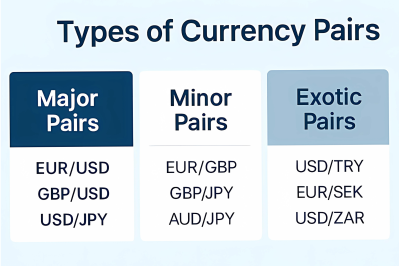

Module 1: Introduction to Forex
What is the Forex Market?
The foreign exchange market (Forex or FX) is the global marketplace for exchanging national currencies. Unlike a centralized stock exchange, the forex market is decentralized and operates entirely electronically over-the-counter (OTC), meaning transactions are conducted directly between participants via computer networks instead of on a centralized exchange.
With over $6.6 trillion in daily trading volume, Forex is the largest and most liquid market in the world. This liquidity ensures trades can be entered and exited quickly, often without significant price slippage, even when trading large volumes.
How the Forex Market Operates
The forex market is open 24 hours a day, five days a week. This is possible because it follows the sun — beginning in Asia (Tokyo), moving to Europe (London), and finally to North America (New York). These are called trading sessions.
- Liquidity: During overlapping sessions like London–New York, the market has the most participants and the tightest spreads.
- Volatility: Events such as economic news releases often happen during major session overlaps, creating price fluctuations and trade opportunities.
Who Trades Forex?
The forex market is traded by a wide range of participants:
- Central Banks: Intervene to control inflation or stabilize their national currency.
- Commercial Banks: Conduct forex transactions for clients or speculative purposes.
- Hedge Funds: Use forex for high-leverage speculative strategies.
- Corporations: Hedge currency exposure on international sales/purchases.
- Retail Traders: Individuals like you trading via brokers to profit from market fluctuations.
Understanding Currency Pairs
In Forex, you always trade one currency for another. This is represented in currency pairs, like EUR/USD. The first currency is the base currency (EUR), and the second is the quote currency (USD).
The exchange rate tells you how much of the quote currency is needed to purchase one unit of the base currency. For example:
- EUR/USD = 1.1050 means 1 Euro = 1.1050 US Dollars.
Example: If you buy EUR/USD at 1.1000 and sell at 1.1100, you've made a 100 pip gain.
Types of Currency Pairs
- Major Pairs: Include the USD and are highly traded (e.g., EUR/USD, GBP/USD).
- Minor Pairs: Exclude USD but include other majors (e.g., EUR/GBP).
- Exotic Pairs: Pair a major with a developing currency (e.g., USD/TRY).
Spread: The difference between the buying (ask) and selling (bid) price. A smaller spread often indicates a more liquid pair.
What Moves Currency Prices?
Currency values change constantly due to multiple factors:
- Economic Indicators: Interest rates, employment data, GDP growth.
- Geopolitical Events: Elections, wars, and international disputes.
- Market Sentiment: News and trader psychology can influence demand for certain currencies.
- Risk Appetite: Traders may favor “risk-on” currencies in good times and “safe-havens” like USD or JPY during crises.
Summary
You’ve now grasped the foundational knowledge of how Forex works. You understand who trades, why they trade, how currencies are paired, and what influences prices. These concepts are essential before moving into technical analysis and trade execution strategies.
Downloads
📘 Module 1 Summary📘 Glossary of Terms
📘 Cheat Sheet